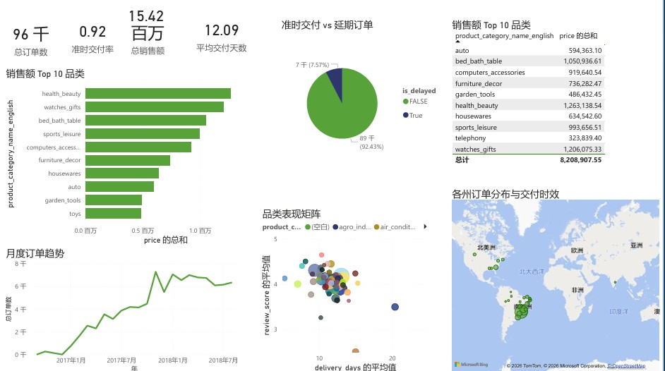

Data Analyst | University of Hong Kong
Built an AI-powered task decomposition tool that automatically breaks down complex tasks into executable subtasks with time estimates and dependency analysis. Designed specifically to demonstrate AI integration, prompt engineering, and robust error handling capabilities required for the AI & Software Engineering Intern role at IGEARS.
Built an interactive Power BI dashboard analyzing employee attrition patterns from 19,000+ records. Identified key risk factors including education level, experience, and city development index. Created risk segmentation model to identify high-attrition candidates using Python (Pandas, Scikit-learn) and visualized insights with DAX measures. Key finding: Entry-level employees in low-development cities show 32% attrition rate, 2x higher than average.
Built an automated pipeline that scrapes, cleans, and analyzes fintech news using Generative AI. The system processes hundreds of articles daily, generating concise summaries, sentiment analysis, and topic classifications. Final insights are compiled into multi-sheet Excel reports for easy review.
✨ Key Features:
Built a comprehensive data analytics pipeline for Hong Kong residential property market analysis. Generated 5,000+ synthetic transaction records, created SQLite database for efficient querying, and developed SQL-based insights on price trends, district rankings, and price-to-area relationships.
✨ Key Features:
Processed 90,000+ orders with Python, performed multi-table join queries with SQL, and created interactive dashboards with Power BI. Identified logistics bottlenecks, star categories, and high-value customer segments.

📊 Dashboard includes: Order trends by month | Regional distribution map | Category performance matrix | On-time delivery rate
Identified market opportunities in mainland-to-Hong Kong medical aesthetics consumption, initiated a cross-border mini-program project positioned as a "curated bridge for mainland customers seeking HK medical aesthetics services".
Independently built a Shopify e-commerce website, analyzed user behavior with Google Analytics, and optimized conversion rates.
📧 your.email@email.com | 🔗 GitHub: zhi-qingying